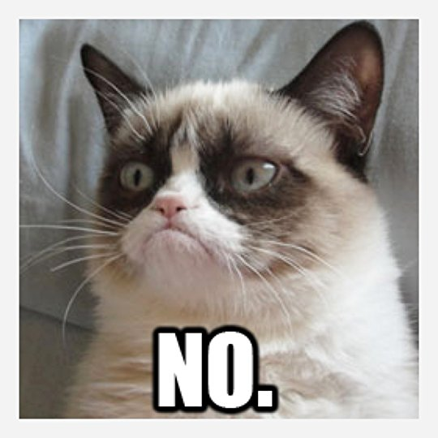
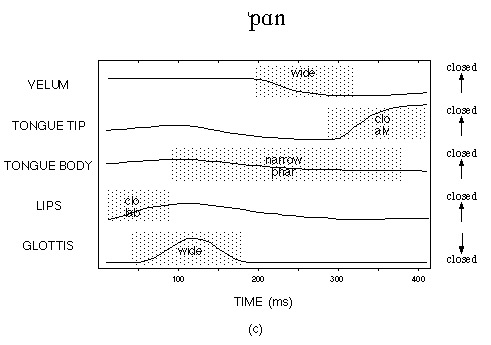

Your writing system is hiding things from you
Transcription vs. Writing systems
Phone boundaries are lies
A bit of prosody
The letter “C”
“ng” is usually /ŋ/, as in “ring” /ɹɪŋ/
“th” can be /θ/ or /ð/
“x” is usually /ks/, as in axis /æksis/
English does not allow double (‘geminate’) consonants
Sliced - /slaɪst/
Buzzed - /bʌzd/
Close (near) - /kloʊs/
Close (a door) - /kloʊz/
We can’t trust it to tell us anything about what’s actually in the speech signal
It doesn’t tell the computer ‘what to expect’
It squishes dialect differences
There is not a one-to-one mapping between speech sounds and written symbols
Write down the ‘sequence of sounds’ directly
Use a symbol set which captures the majority of sounds that might arise
Make a ‘dictionary’ of expected pronunciations
You’re always transcribing somebody else saying them
There is no such thing as an automatic IPA “translator” for written words, and there never could be
Some dictionaries give you IPA, but badly
Lexical resources give you transcriptions, but they’re not universal!
/əˈlumɪnəm/ vs. /aljuˈmɪnium/
/ɡɑˈɹɑʒ/ vs. /ˈɡɛɹɑʒ/

“Sell your iron to Walter Zion”
/sɛl jə˞ ajə˞n tə wɑltə˞ zajən/
/sɛl jə ajən tə wɑltə zajən/
park the car in harvard yard
/pɑɹk ðə kɑɹ ɪn hɑɹvə˞d jɑɹd/
/pɑ:k ðə kɑ: ɪn hɑɹvəd jɑ:d/
“I said a hip, hop, the hibbie, the hibbie to the hip hip hop and you don’t stop the rocking to the bang bang boogie say up jump the boogie to the rhythm of the boogie the beat”
[ɑsɛdə hɪp hop ðəhɪbi ðe hɪbi təðə hɪp hɪp hɑpʰɑjɨ doʊn stɑp ðə ɹɑkɪn tʰəðə bejŋ bejŋ bʊɡi seɪ ʔʌp dʒʌmp ðə bʊɡi tʰəðə ɹɪðm ʌ ðʌ bʊɡidə bit]

Sequences of speech gestures
“First, there’s a voiced bilabial stop, then an /i/ vowel, then a voiceless alveolar stop”
Is that really true?

bad |
ban |
|---|
bomb |
bob |
|---|
duck |
dunk |
|---|
bob |
bomb |
|---|

We pay attention to tiny details!
When we start preparing for the next sound before it even begins

Yes, that’s a clickable link to a PDF

Tenth
Thin kids
Pine thugs
Play
Individual phones blend together in motion
Elements of some phones “bleed into” surrounding words
Phones are different depending on the adjacent phones

[k] isn’t always [k]
We can’t build phone detectors
We need to think about sequences of phones
This is a feature, not a bug
… but that doesn’t mean it makes things easy
Speaking of not easy…
The aspects of speech beyond individual phonetic segments used to express meaning
Intonation
Stress
Tempo
Pauses
Chunking
The use of voice pitch to express information beyond the segmental contents
“John’s going to the park next week”
“Please pick up eggs, milk, taco sauce, cat food, bananas, snow peas”
Marking certain words as focal or important in the sentence
“No, I’m not going with Carol, I’m going with Karen”
“I’m buying Frank’s car once he retires.”
The speed of speech
The temporary cessation of speech and placement of prosodic boundaries
You could ask Tina. Mike regularly asks her for help with his mom’s obnoxious parrot.
They surprised Tina. Matt helped enormously with every aspect of the two-day party.
We saw talks by the President’s two daughters, Bill Clinton and George Bush.
Let’s eat, Grandma.
The separation of elements of words into units and groupings
We’re having coffee cake and honey
We’re going to visit to Five Guys.
My dissertation committee, a duck, and three squirrels were sitting in the park.
I’d accept your late homework, but I’m all out of give-a-damn today
We need to get it right
We need to be sensitive to it
It differs a great deal across people and dialects
It carries a lot of information
It provides cues to things missing in text
It’s one of the things we’re best at measuring!
How we do speech
How we describe and transcribe speech
Why our writing system sucks
Why ‘segments’ is a dangerous idea
… and what we’re doing beyond the segments
| # Speech is impossibly hard, but we do it anyways |
… but that’s only because we’re really awesome.
We flap bits of meat around in our heads,
in precise, intricate patterns and series,
without thinking, “trying”, or running out of air,
while walking, running, biking, or eating,
…and still get the message across.
We’re able to pull signals out of the air,
parse them according to the rules in our minds,
take advantage of tiny details,
recover huge amounts of lost information,
and wade through mind-boggling variability
… all without even noticing you’re doing anything special.

Read johnson_acoustics.pdf
Bring Sound